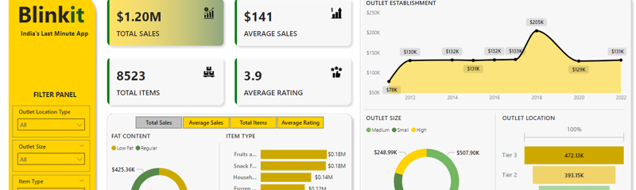
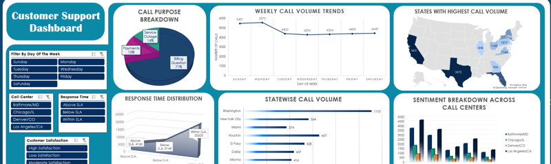

SQL-Based Election Analytics Framework (End to End Automation)
Organization : Polstrat Pvt.LTD
Description :
Developed a comprehensive SQL solution to streamline electoral data analysis, automating complex data processing and seamlessly integrating with Power BI for visualization.
This solution reduced analysis and visualization time by 90%,
significantly boosting efficiency and delivering faster insights.
Skills Used :
SQL Server, Stored Procedures, Table-Valued Functions,
Dynamic SQL Views, Window Functions, Database Design, Data Transformation,
Query Optimization, Power BI Integration, Data Visualization,
Data Analysis Automation, Python, Pandas,
DAX Functions, Political Analysis, Ad Hoc Analysis
--------------------------------------------------------------------------------------------------------------------
Time-Series Forecasting and Predictive Analysis of Nvidia Stock Performance
Organization : Personal Project
Description :
Comprehensive analysis of Nvidia's stock performance (2014-2024),
using time series techniques and statistical models.
Key insights include closing price trends, trade volume, and moving averages.
ARIMA model was used to forecast stock prices for the next 30 days,
providing data-driven predictions.
Skills Used :
Exploratory Data Analysis (EDA), Time Series Analysis, Predictive Modeling,
ARIMA Modeling, Statistical Analysis, Moving Averages,
Autocorrelation Analysis, PACF/ACF Analysis, Residual Analysis, Data Cleaning,
Data Preparation, Financial Data Analysis, Financial Forecasting
--------------------------------------------------------------------------------------------------------------------

Interactive Sales Performance Dashboard for Blinkit Store
Organization : Personal Project
Description :
Interactive Power BI dashboard for Blinkit Store, analyzing sales performance,
customer ratings, and product attributes.
Key insights include sales by fat content, item type, and
outlet characteristics. Custom slicers enhance interactivity,
allowing stakeholders to explore sales data.
Skills Used :
Power BI, Data Visualization, KPI Calculation, Sales Performance Analysis,
Interactive Dashboards, Custom Slicers, Data Cleaning,
Product Attribute Analysis,
Geographical Sales Analysis, Resource Allocation Analysis
--------------------------------------------------------------------------------------------------------------------

Absenteeism Analytics Dashboard
Organization : Antler
Description :
Interactive Tableau dashboard for Antler Company's HR, analyzing absenteeism,
workload, and key workforce metrics. Filter by day, season, and education level
to empower data-driven HR decisions and optimize employee management.
Skills Used :
Tableau, Microsoft Excel, Correlation Analysis, Root Cause Analysis,
Data Visualization, HR Analytics, Absenteeism Analysis,
Workload Distribution Analysis, Correlation Analysis,
Social Factor Analysis, Transportation Expense Analysis,
Dynamic Filtering, Interactive Dashboards, Business Intelligence
--------------------------------------------------------------------------------------------------------------------

E-commerce Customer Service Data Analysis
Organization : Personal Project
Description :
Interactive Excel dashboard for customer service, analyzing sentiment,
response times, complaints, and customer segments.
Empowering data-driven decisions to enhance customer
experience and optimize service efficiency.
Skills Used :
Microsoft Excel, Sentiment Analysis,
Customer Segmentation Analysis, Root Cause Analysis
--------------------------------------------------------------------------------------------------------------------